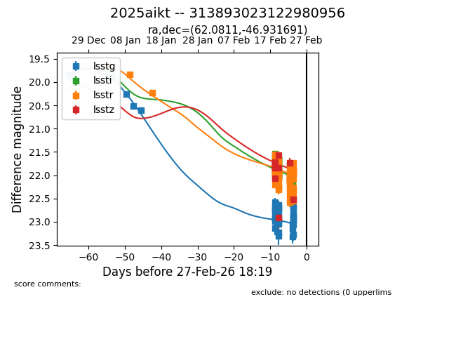
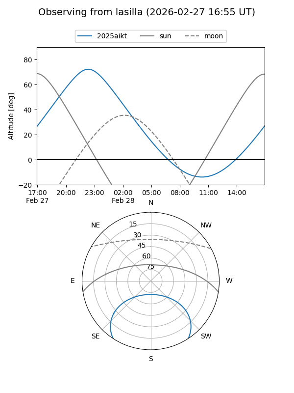
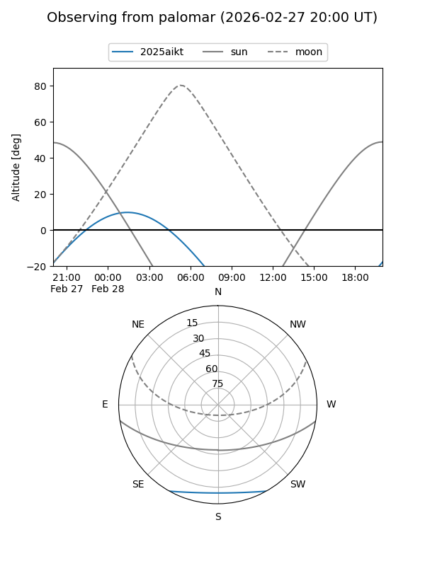
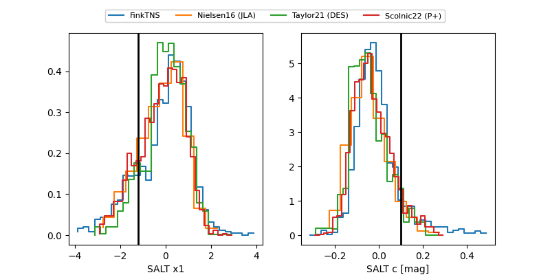

2025aikt
Target 2025aikt at 2026-02-27 18:21
Aliases and brokers:
TNS: link
YSE: link
alt names
313893023122980956 (lsst,fink_lsst)
2025aikt (tns,yse)
Coordinates:
equatorial (ra, dec) = 62.0811,-46.93169
equatorial (HMS+DMS) = 04:08:19.46,-46:55:54.09
galactic (l, b) = (253.7607,-46.89097)
Flags:
Photometry:
last lsstg=22.87, lssti=21.95, lsstr=21.73, lsstz=22.52
41 lsstg, 38 lssti, 57 lsstr, 12 lsstz detections
Lightcurve

Visibility


Additional plots
